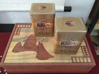

‹
›
Toggle navigation
主页
茶文化科普
茶的分类
茶的功效
泡茶小技巧
【茶文化】
产品
养生论坛
在线调查
茶文化科普
more>>
茶的分类
茶的功效
泡茶小技巧
【茶文化】哪些减肥茶最好呢— 减肥茶排名介绍
【茶文化】中国十大茶叶排行榜介绍
养生论坛
more>>
喝茶有哪些好处与坏处呢—喝茶好处与坏处介绍
2016-10-26
喝茶有哪些好处与坏处呢—喝茶好处与坏处介绍
2016-10-26
喝茶有哪些好处与坏处呢—喝茶好处与坏处介绍
2016-10-26
喝茶有哪些好处与坏处呢—喝茶好处与坏处介绍
2016-10-26
喝茶有哪些好处与坏处呢—喝茶好处与坏处介绍
2016-10-26
推荐
产品>>
大叶种滇红
凤凰多丛茶
硕果
小柠红
喜茶饼
精品冰岛
在线调查
您平时喜欢喝茶吗？
喜欢
一般
不喜欢
您最经常喝的是什么茶？
乌龙茶
红茶
绿茶
黑茶
白茶
不喝茶
您喝茶的频率是？
一天几次
一天一次
三天一次
一周一次
偶尔喝
无规律
提交
 大叶种滇红
大叶种滇红 小柠红
小柠红 喜茶饼
喜茶饼 精品冰岛
精品冰岛